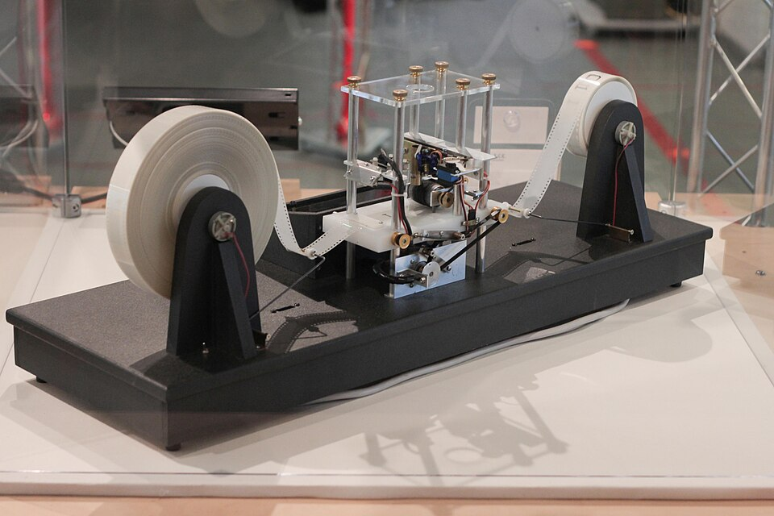

ChiemSeherin
ChiemSeherin
Good morning!
Nur das Schöne wird die Welt retten!
Fjodor Dostojewski
Nicht verzagen, Doc Alvers fragen!
Informatik — Grundkurs 11
Wiederholung vor Klassenarbeit 1
Lernbereich 1 und 2 in drei Blöcken — dann 20 Aufgaben zum Selbsttest
Nicht verzagen, Doc Alvers fragen!
Wo wir stehen
Lernbereich 2 ist abgeschlossen — zuletzt: Medien beurteilen, Urheberrecht, Datenschutz
Diese Woche schreiben wir Klassenarbeit 1 über Lernbereich 1 und 2 (45 Minuten)
Heute alles einmal durch: Wissenschaftsbereiche, Daten und Informationen, Recherche und Recht
Leitfrage: Kann ich jede Antwort begründen — nicht nur ankreuzen?
Nicht verzagen, Doc Alvers fragen!
Kapitel 01
Informatik als Wissenschaft
Vier Bereiche und die ersten Rechner

Nicht verzagen, Doc Alvers fragen!
Vier Bereiche der Informatik
| Bereich | Worum es geht | typisches Beispiel |
|---|---|---|
| theoretisch | Was ist überhaupt berechenbar? | Halteproblem |
| praktisch | Software planvoll bauen | Compiler, Software Engineering |
| technisch | der Rechner selbst | Prozessor, Betriebssystem |
| angewandt | Informatik in anderen Fächern | CT-Bild, Wettervorhersage |
Z3 (Konrad Zuse, 1941): erster funktionsfähiger, programmgesteuerter Rechner — binär
Ihr Programm kam vom Lochstreifen — das gespeicherte Programm kam erst mit von Neumann
Nicht verzagen, Doc Alvers fragen!
Kapitel 02
Daten und Informationen
Begriffe, Bits, Digitalisieren
Nicht verzagen, Doc Alvers fragen!
Begriffe, die sitzen müssen
Nachricht: die Zeichenfolge — Information: ihre Bedeutung für den Empfänger
Daten: die maschinell verarbeitbare Form der Nachricht
Mit Bit gibt es Werte: 12 Bit ergeben
EVA-Prinzip: Eingabe, Verarbeitung, Ausgabe — mit Speicherung heißt es EVAS
Single Point of Failure: eine Stelle, deren Ausfall das ganze System stilllegt
Nicht verzagen, Doc Alvers fragen!
Digitalisieren in drei Schritten
| Schritt | betrifft | was passiert |
|---|---|---|
| abtasten | die Zeitachse | in festen Abständen messen |
| quantisieren | die Werteachse | auf feste Stufen runden (8 Bit: 256 Stufen) |
| codieren | die Darstellung | jede Stufe als Bitfolge schreiben |
Verloren sind die Zwischenwerte zwischen zwei Messpunkten und innerhalb einer Stufe
Feiner abtasten verkleinert den Verlust — beseitigt ihn aber nie
Nicht verzagen, Doc Alvers fragen!
Kapitel 03
Recherche, Medien, Recht
Beschaffen, prüfen, veröffentlichen
Nicht verzagen, Doc Alvers fragen!
Informationen beschaffen und prüfen
Kreislauf: Bedarf klären, beschaffen, aufbereiten, nutzen, bewerten
Drei Seiten zitieren dieselbe Studie: Das ist ein Beleg, nicht drei
Glaubwürdig: nachvollziehbare Belege und eine benannte, verantwortliche Stelle
Quellenangabe im Netz: Autor oder Herausgeber, Titel, URL, Abrufdatum
y-Achse ab 90 statt ab 0: Kleine Unterschiede wirken dramatisch groß
Nicht verzagen, Doc Alvers fragen!
Veröffentlichen mit einem CMS
Grundprinzip: Inhalt, Struktur und Gestaltung werden getrennt gehalten
Der Inhalt liegt in der Datenbank, die Gestaltung in Vorlagen
Ein neues Design ändert deshalb keinen einzigen Text
Rollen- und Rechtekonzept: wer Inhalte anlegen, ändern oder veröffentlichen darf
Nicht verzagen, Doc Alvers fragen!
Recht in fünf Sätzen
| Stichwort | Das gilt |
|---|---|
| Urheberrecht | entsteht mit der Schöpfung — beim Foto mit der Aufnahme, ohne Anmeldung |
| Plagiat | fremde Leistung übernehmen, ohne sie zu kennzeichnen |
| Zitat | mit Beleg ausdrücklich erlaubt |
| Bilder | bei unklaren Rechten: freie Lizenz nehmen oder selbst fotografieren |
| Datenminimierung | nur die Daten erheben, die für den Zweck nötig sind |
Eine Quellenangabe ersetzt keine fehlenden Rechte — und das ©-Zeichen ist nur ein Hinweis
Nicht verzagen, Doc Alvers fragen!
In der Arbeit zählt die Begründung: Bereich, Begriff oder Regel nennen — und in einem Satz sagen, warum.
Merksatz
Nicht verzagen, Doc Alvers fragen!
Fun Facts
Das Wort Informatik prägte Karl Steinbuch 1957 — aus Information und Automatik
Die originale Z3 wurde 1943 bei einem Bombenangriff zerstört — ein Nachbau steht im Deutschen Museum
Alan Turing bewies 1936: Kein Programm kann für jedes Programm entscheiden, ob es anhält
Das Urheberrecht erlischt in Deutschland erst 70 Jahre nach dem Tod des Urhebers
Nicht verzagen, Doc Alvers fragen!
So gehst du in die Arbeit
Erst alles überfliegen, dann mit der sichersten Aufgabe anfangen
Bei Auswahlfragen jede falsche Antwort begründet ausschließen
Begriffe mit einem Beispiel absichern — das zeigt, dass du sie verstanden hast
Bit- und Speicheraufgaben mit Zwischenschritt aufschreiben
Am Ende die Frage noch einmal lesen: Habe ich beantwortet, was gefragt war?
Nicht verzagen, Doc Alvers fragen!
Eure Aufgabe
Wiederholung an Stationen in Gruppen: Bereiche und Meilensteine, Bit und Digitalisieren, Quellen und Grafiken, CMS und Recht
An jeder Station: Fragen gegenseitig stellen — die Antwort zählt nur mit Begründung
Notiert, was noch hakt: Das ist eure Lernliste bis zur Arbeit
Zum Schluss: Aufgaben (20) auf der Planseite — Lösung pro Aufgabe zum Aufklappen
Nicht verzagen, Doc Alvers fragen!